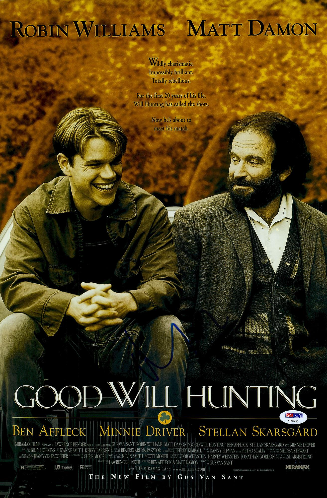
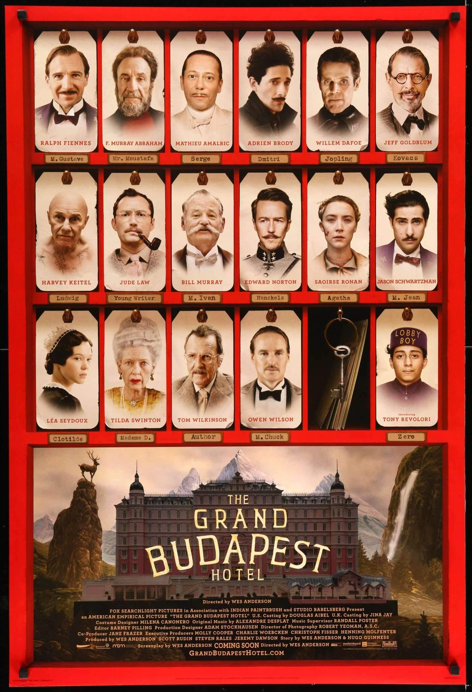

 A touching tale of a wayward young man who struggles to find his identity, living in a world where he can solve any problem, except the one brewing deep within himself, until one day he meets his soul mate who opens his mind and his heart. See More (IMDB Page)
 The adventures of Gustave H, a legendary concierge at a famous hotel from the fictional Republic of Zubrowka between the first and second World Wars, and Zero Moustafa, the lobby boy who becomes his most trusted friend. See More (IMDB Page)
In the falangist Spain of 1944, the bookish young stepdaughter of a sadistic army officer escapes into an eerie but captivating fantasy world. See More (IMDB Page)